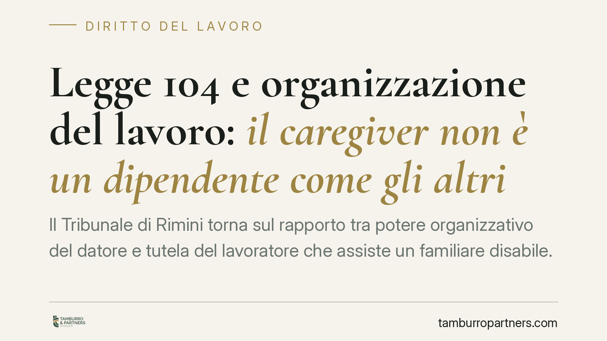

Legge 104 e organizzazione del lavoro: il caregiver non è un dipendente come gli altri
Il Tribunale di Rimini torna sul rapporto tra potere organizzativo del datore e tutela del lavoratore che assiste un familiare disabile. La modifica unilaterale del turno o della sede, se non sorretta da una ragione proporzionata, può integrare discriminazione indiretta per associazione. Una decisione che ridefinisce i margini di discrezionalità aziendale e rafforza le garanzie per chi beneficia della Legge 104/1992.

Il caso
Una lavoratrice occupata presso una catena di supermercati, caregiver di un familiare disabile e beneficiaria delle agevolazioni della Legge 104/1992, contestava la modifica unilaterale del proprio turno di lavoro. Secondo la ricorrente, la variazione comprometteva la possibilità di prestare assistenza.
Il Tribunale di Rimini, Sezione Lavoro, ha ritenuto che il datore non possa incidere sull'articolazione dell'orario o sulla sede del caregiver senza dimostrare una ragione organizzativa concreta e proporzionata. In assenza di tale prova, la condotta può configurare una discriminazione indiretta.
> *Nota redazionale: al momento della pubblicazione gli estremi completi della decisione (numero e data) non risultano ancora ufficialmente disponibili. L'analisi va quindi letta come ricostruzione dei principi applicati, non come commento al dispositivo definitivo.*
Inquadramento normativo
Il riferimento è la Legge 5 febbraio 1992, n. 104 (L. 104/1992). L'art. 33, comma 5 riconosce al lavoratore che assiste un familiare disabile il diritto a non essere trasferito senza il proprio consenso ad altra sede. È una tutela specifica, che limita il normale potere di trasferimento previsto dall'art. 2103 c.c.
Accanto a questa garanzia opera il concetto di discriminazione indiretta per associazione. Si verifica quando un lavoratore è svantaggiato non per una propria condizione protetta, ma per il legame con una persona disabile che assiste. Il principio deriva dalla sentenza della Corte di Giustizia UE Coleman (C-303/06), che ha esteso la tutela antidiscriminatoria anche a chi, pur non disabile, subisce un trattamento penalizzante a causa del rapporto con un familiare disabile.
Il punto centrale è la distinzione tra potere discrezionale e potere arbitrario. Il datore conserva la facoltà di organizzare l'attività, ma quando una scelta organizzativa colpisce il caregiver deve superare un test di proporzionalità: la misura deve rispondere a una finalità legittima, essere idonea allo scopo e non eccedere quanto necessario. Se l'onere per l'azienda nel mantenere il turno è sproporzionato può prevalere l'esigenza organizzativa; in caso contrario, la modifica resta illegittima.
Implicazioni pratiche
La decisione sposta l'onere della prova. Non basta che il datore invochi una generica esigenza organizzativa: deve dimostrare, in concreto, perché la conservazione del turno o della sede comporterebbe un sacrificio irragionevole.
Attenzione, però: la tutela non è assoluta. Non esiste un diritto incondizionato del caregiver a conservare per sempre un determinato turno. La protezione scatta quando la modifica è priva di giustificazione proporzionata o quando penalizza il lavoratore proprio in ragione del suo ruolo di assistenza. L'equilibrio si costruisce caso per caso.
Per l'impresa, ciò significa dover documentare le ragioni delle scelte organizzative che coinvolgono i lavoratori con Legge 104/1992. Per il lavoratore, significa poter contestare variazioni apparentemente neutre ma di fatto penalizzanti.
Cosa fare in concreto
Se sei il lavoratore caregiver:
- Conserva ogni documentazione relativa al riconoscimento della Legge 104/1992 e al legame assistenziale con il familiare.
- Richiedi per iscritto al datore le ragioni organizzative della modifica di turno o sede.
- Annota date, comunicazioni e impatto concreto della variazione sull'attività di assistenza.
Se sei il datore di lavoro:
- Prima di modificare turno o sede di un caregiver, verifica l'applicabilità dell'art. 33, comma 5, L. 104/1992 e la necessità del consenso.
- Documenta per iscritto la ragione organizzativa e la relativa proporzionalità, conservando evidenza delle alternative valutate.
In entrambi i casi è opportuno rivolgersi tempestivamente a un professionista per una valutazione specifica, poiché l'esito dipende dalle circostanze concrete del singolo rapporto.
---
*Contributo informativo a cura di Tamburro & Partners Avvocati - Avv. Giuseppe Tamburro. Non costituisce parere legale.*
Ogni storia di lavoro ha i suoi tempi.
Se gestisci HR e vuoi un confronto su contenzioso, ispezioni o licenziamenti, scrivi allo studio. Ti rispondiamo entro un giorno lavorativo.